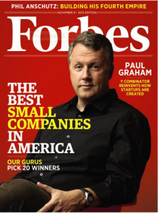

I have about three draft posts, all unfinished on a particular theme which I have touched on once before here. The general theme is the growing viability of doing well by doing good. One of the posts was called Googlenomics and referred to the massive amount ofI was also going to mention a typically interesting and provocative post by Steve Randy Waldman where talks about 'character' and capitalism and ends up with this proposal
T.S. Eliot once wrote, "It is impossible to design a system so perfect that no one needs to be good." Perhaps the art is to come up with a system, however imperfect, under which being good is the best way to succeed.
That's a worthwhile thing to think about too.
There are lots of things to be said here. But the purpose for my finally breaking into the published post mode is to announce the fact that Paul Graham has had a good go at this issue and, like me concludes that doing well by doing good is a business model whose time may have come. He doesn't say so in so many words, and his focus is on startups. And one of the things he doesn't seem to say (though I read his piece quickly) is that all this is made possible by the scalability that the net gives things - the way in which it reduces to near-zero cost the rolling out of some service or provision of information to hundreds of millions of users (and billions when they get access to the net). Edited highlights are below the fold.
(Derived from a talk to a startup school.)
About a month after we started Y Combinator [Graham's venture capital firm] we came up with the phrase that became our motto: Make something people want. We've learned a lot since then, but if I were choosing now that's still the one I'd pick.
Another thing we tell founders is not to worry too much about the business model, at least at first. Not because making money is unimportant, but because it's so much easier than building something great.
A couple weeks ago I realized that if you put those two ideas together, you get something surprising. Make something people want. Don't worry too much about making money. What you've got is a description of a charity.
When you get an unexpected result like this, it could either be a bug or a new discovery. Either businesses aren't supposed to be like charities, and we've proven by reductio ad absurdum that one or both of the principles we began with is false. Or we have a new idea.
I suspect it's the latter, because as soon as this thought occurred to me, a whole bunch of other things fell into place.
Examples
. . . In Patrick O'Brian's novels, his captains always try to get upwind of their opponents. If you're upwind, you decide when and if to engage the other ship. Craigslist is effectively upwind of enormous revenues. They'd face some challenges if they wanted to make more, but not the sort you face when you're tacking upwind, trying to force a crappy product on ambivalent users by spending ten times as much on sales as on development. [1]
. . .
Google looked a lot like a charity in the beginning. They didn't have ads for over a year. At year 1, Google was indistinguishable from a nonprofit. If a nonprofit or government organization had started a project to index the web, Google at year 1 is the limit of what they'd have produced.
. . . From either direction we get to the same spot. If you start from successful startups, you find they often behaved like nonprofits. And if you start from ideas for nonprofits, you find they'd often make good startups.
. . . One way to guess how far an idea extends is to ask yourself at what point you'd bet against it. The thought of betting against benevolence is alarming in the same way as saying that something is technically impossible. You're just asking to be made a fool of, because these are such powerful forces.
For example, initially I thought maybe this principle only applied to Internet startups. Obviously it worked for Google, but what about Microsoft? Surely Microsoft isn't benevolent? But when I think back to the beginning, they were. Compared to IBM they were like Robin Hood. When IBM introduced the PC, they thought they were going to make money selling hardware at high prices. But by gaining control of the PC standard, Microsoft opened up the market to any manufacturer. Hardware prices plummeted, and lots of people got to have computers who couldn't otherwise have afforded them. It's the sort of thing you'd expect Google to do.
Microsoft isn't so benevolent now. Now when one thinks of what Microsoft does to users, all the verbs that come to mind begin with F. And yet it doesn't seem to pay. Their stock price has been flat for years. Back when they were Robin Hood, their stock price rose like Google's. Could there be a connection?
You can see how there would be. When you're small, you can't bully customers, so you have to charm them. Whereas when you're big you can maltreat them at will, and you tend to, because it's easier than satisfying them. You grow big by being nice, but you can stay big by being mean. . .
Morale
There's a lot of external evidence that benevolence works. But how does it work? One advantage of investing in a large number of startups is that you get a lot of data about how they work. From what we've seen, being good seems to help startups in three ways: it improves their morale, it makes other people want to help them, and above all, it helps them be decisive.
Morale is tremendously important to a startupso important that morale alone is almost enough to determine success. Startups are often described as emotional roller-coasters. One minute you're going to take over the world, and the next you're doomed. The problem with feeling you're doomed is not just that it makes you unhappy, but that it makes you stop working. So the downhills of the roller-coaster are more of a self fulfilling prophecy than the uphills. If feeling you're going to succeed makes you work harder, that probably improves your chances of succeeding, but if feeling you're going to fail makes you stop working, that practically guarantees you'll fail.
Here's where benevolence comes in. If you feel you're really helping people, you'll keep working even when it seems like your startup is doomed. Most of us have some amount of natural benevolence. The mere fact that someone needs you makes you want to help them. So if you start the kind of startup where users come back each day, you've basically built yourself a giant tamagotchi. You've made something you need to take care of.
Blogger is a famous example of a startup that went through really low lows and survived. At one point they ran out of money and everyone left. Evan Williams came in to work the next day, and there was no one but him. What kept him going? Partly that users needed him. He was hosting thousands of people's blogs. He couldn't just let the site die.
There are many advantages of launching quickly, but the most important may be that once you have users, the tamagotchi effect kicks in. Once you have users to take care of, you're forced to figure out what will make them happy, and that's actually very valuable information.
. . . If you're really committed and your startup is cheap to run, you become very hard to kill. And practically all startups, even the most successful, come close to death at some point. So if doing good for people gives you a sense of mission that makes you harder to kill, that alone more than compensates for whatever you lose by not choosing a more selfish project.
Help
Another advantage of being good is that it makes other people want to help you. This too seems to be an inborn trait in humans.
One of the startups we've funded, Octopart, is currently locked in a classic battle of good versus evil. They're a search site for industrial components. A lot of people need to search for components, and before Octopart there was no good way to do it. That, it turned out, was no coincidence.
. . . If you're benevolent, people will rally around you: investors, customers, other companies, and potential employees. In the long term the most important may be the potential employees. I think everyone knows now that good hackers are much better than mediocre ones. If you can attract the best hackers to work for you, as Google has, you have a big advantage. And the very best hackers tend to be idealistic. They're not desperate for a job. They can work wherever they want. So most want to work on things that will make the world better.((This is an important motive for a lot of companies corporate social responsibility pushes - to attract or retain good employees.~NG))
Compass
But the most important advantage of being good is that it acts as a compass. One of the hardest parts of doing a startup is that you have so many choices. There are just two or three of you, and a thousand things you could do. How do you decide?
Here's the answer: Do whatever's best for your users. You can hold onto this like a rope in a hurricane, and it will save you if anything can. Follow it and it will take you through everything you need to do.
. . . Being good is a particularly useful strategy for making decisions in complex situations because it's stateless. It's like telling the truth. The trouble with lying is that you have to remember everything you've said in the past to make sure you don't contradict yourself. If you tell the truth you don't have to remember anything, and that's a really useful property in domains where things happen fast.
. . . When you write something telling people to be good, you seem to be claiming to be good yourself. So I want to say explicitly that I am not a particularly good person. When I was a kid I was firmly in the camp of bad. The way adults used the word good, it seemed to be synonymous with quiet, so I grew up very suspicious of it.
You know how there are some people whose names come up in conversation and everyone says "He's such a great guy?" People never say that about me. The best I get is "he means well." I am not claiming to be good. At best I speak good as a second language.
So I'm not suggesting you be good in the usual sanctimonious way. I'm suggesting it because it works. It will work not just as a statement of "values," but as a guide to strategy, and even a design spec for software. Don't just not be evil. Be good.
John Mackey, CEO of Whole Foods, wrote about a similar concept - "conscious capitalism", where businesses that attempted to be ethical would actually be more profitable and successful in the long run. Unfortunately this was undermined by some rather less-than-ethical behaviour himself where he posted anonymously on various finance blogs criticising a possible take-over target, presumably with the intention of trying to depress its share price.
Interesting stuff Nicholas, thanks.
I'd actually argue that the reason we consider certain behaviours basically "ethical" and "good", is because they've proven to be behaviours that everyone can partake in and benefit from, and will work sustainably over the long term. "Evil" behaviours are those that profit a few at the expense of others, and would fail if everyone tried them, and are never long-term strategies anyway.
Scratch Microsoft from the list. It was never really open from the beginning. Only pretending. And only appeared open in relation to the restrictions of IBM. Microsoft has for years portrayed an image far removed from reality. The company has been consistent in it's business practice by ignoring standards and wanting to own computing. For an insight into the mind behind Microsoft there's the letter that Bill Gates wrote to the Home Brew Computer Club magazine in 1976. Even back then he believed in controlling resale of the product http://www.digibarn.com/collections/newsletters/homebrew/V2_01/gatesletter.html
MattG,
Read in context PG's article is still correct.
A couple of quotes.
Can innovation really be managed, or is it a case where you have to keep the company and its managers out of the way?
Google CEO, Eric Schmidt
Another story along these lines.